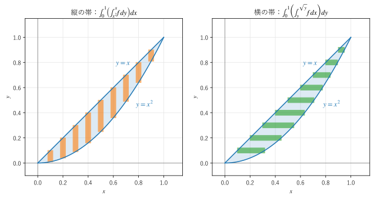
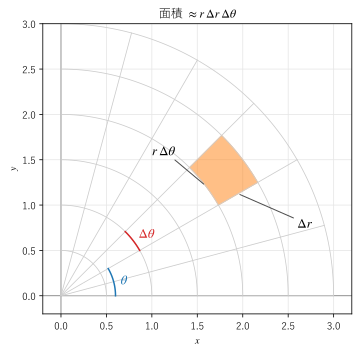

第 10 章 重積分と変数変換
この章から、場を積分する方法を扱う。最初に、平面の領域や立体の上で関数を積分する重積分を説明する。重積分は、1 変数の積分を繰り返す累次積分で計算できる。また、極座標や球座標に変数を変換すると、円や球の上の積分が簡単になる。最後に、質量・重心・慣性モーメントへの応用と、SciPy による数値計算を示す。
2 重積分の定義
1 変数の定積分 \(\int_a^b f(x) \, dx\) は、区間を細かく分け、各区間の幅と関数の値の積を足し合わせた和の極限であった。2 重積分は、これを平面の領域に広げたものである。
平面の領域 \(D\) を、小さな長方形 \(\Delta D_1, \Delta D_2, \ldots, \Delta D_n\) に分ける。各長方形の面積を \(\Delta A_k\)、その中の 1 点を \((x_k, y_k)\) として、和
をつくる。分割を細かくしていったときにこの和が一定の値に近づくなら、その値を \(f\) の \(D\) 上の重積分（2 重積分）といい、次のように書く。
\(dA\) は面積の微小な要素（面積要素）である。\(f \ge 0\) なら、重積分は曲面 \(z = f(x, y)\) と領域 \(D\) の間にある立体の体積を表す。\(f = 1\) なら、重積分は \(D\) の面積そのものである。\(f\) が板の面密度なら板の質量、熱の発生量の分布なら総発熱量になる。工学では「分布している量の合計」を求めるときに重積分を使う。
累次積分
長方形の領域
重積分を定義どおりに和の極限として計算するのは大変である。実際には、1 変数の積分を 2 回繰り返す累次積分で計算する。
長方形の領域 \(D = \{(x, y) \mid a \le x \le b, \ c \le y \le d\}\) で \(f\) が連続なら、次の式が成り立つ（フビニの定理）。
内側の積分では、もう一方の変数を定数とみなす。たとえば、\(D = [0, 1] \times [0, 2]\) での \(f = x y^2\) の積分は次のようになる。
一般の領域
長方形でない領域では、内側の積分の範囲が外側の変数に依存する。例として、曲線 \(y = x^2\) と直線 \(y = x\) で囲まれた領域
で \(f = xy\) を積分する。図 14 の左のように、\(x\) を固定すると \(y\) は \(x^2\) から \(x\) まで動く。そこで、先に \(y\) で積分する。


図 14 同じ領域を縦の帯と横の帯に分ける
積分の順序の交換
同じ領域を、図 14 の右のように横の帯に分けることもできる。\(y\) を固定すると、\(x\) は直線 \(x = y\) から曲線 \(x = \sqrt{y}\) まで動く。
どちらの順序でも同じ値になる。順序を交換するときは、領域の図を描いて、積分の範囲を正しく書き直すことが大切である。
順序の交換は、計算できない積分を計算できる形に変えるのに役立つ。たとえば
は、\(e^{y^2}\) の原始関数が初等関数で表せないため、このままでは内側の積分を計算できない。積分の領域は \(0 \le x \le y \le 1\) という三角形なので、順序を交換すると
と計算できる。
3 重積分
立体 \(V\) の上の体積積分（3 重積分）も、2 重積分と同じく小さな直方体に分けた和の極限として定義し、累次積分で計算する。
例として、\(x \ge 0\), \(y \ge 0\), \(z \ge 0\), \(x + y + z \le 1\) で表される四面体の体積を求める。外側から順に \(x\) は 0 から 1、\(y\) は 0 から \(1 - x\)、\(z\) は 0 から \(1 - x - y\) まで動く。
変数変換とヤコビアン
1 変数の置換積分
1 変数の積分で \(x = g(u)\) と置き換えると、\(dx = g'(u) \, du\) となる。\(g'(u)\) は、\(u\) の微小な区間の長さが \(x\) に移ったときに何倍になるかを表す。多変数でも同じように、変数を変えたときに面積や体積が何倍になるかを考えればよい。
2 変数の変数変換
\(x = x(u, v)\), \(y = y(u, v)\) と変数を変換する。\(uv\) 平面の小さな長方形（辺 \(du\), \(dv\)）は、\(xy\) 平面では、2 つのベクトル
で張られる小さな平行四辺形に移る。平行四辺形の面積は、2 つのベクトルを並べた行列式の絶対値に等しい。2 つのベクトルを \(z\) 成分が 0 の 3 次元のベクトルとみなすと、この行列式は外積の \(z\) 成分であり、その絶対値は外積の大きさ、つまり平行四辺形の面積である（第 2 章）。この行列式をヤコビアン（ヤコビ行列式）という。
したがって \(dx \, dy = \left| \dfrac{\partial(x, y)}{\partial(u, v)} \right| du \, dv\) であり、次の変数変換の公式が成り立つ。
\(D'\) は、\(D\) に対応する \(uv\) 平面の領域である。変換は、\(D'\) と \(D\) の点が 1 対 1 に対応するものとする（境界の点のように面積が 0 の部分では、1 対 1 でなくてもよい）。
極座標
極座標 \(x = r\cos\theta\), \(y = r\sin\theta\) のヤコビアンは
なので、\(dx \, dy = r \, dr \, d\theta\) である。図 15 のように、極座標の微小な領域は、半径方向の幅 \(\Delta r\)、円周方向の幅 \(r \Delta\theta\) のほぼ長方形とみなせる。原点から遠いほど同じ \(\Delta\theta\) でも面積が大きくなることが、因子 \(r\) に表れている。これは第 9 章のスケール因子の積 \(h_r h_\theta = r\) と同じものである。


図 15 極座標の微小な領域の面積
例として、平面全体で \(e^{-(x^2 + y^2)}\) を積分する。直交座標のままでは計算できないが、極座標に変換すると
となる。左辺は \(\left( \int_{-\infty}^\infty e^{-x^2} dx \right)^2\) に等しいので、ガウス積分 \(\int_{-\infty}^\infty e^{-x^2} dx = \sqrt{\pi}\) が得られる。この値は、正規分布や熱伝導の解など、工学のさまざまな場面で現れる。
線形な変換
\(x = au\), \(y = bv\)（\(a, b > 0\)）と変換すると、ヤコビアンは \(ab\) である。楕円 \(x^2/a^2 + y^2/b^2 \le 1\) は単位円板 \(u^2 + v^2 \le 1\) に対応するので、楕円の面積は
となる。一般に、行列 \(M\) による線形な変換では、面積は \(|\det M|\) 倍になる。
3 変数の変数変換
3 変数でも同じく、\(dx \, dy \, dz = \left| \dfrac{\partial(x, y, z)}{\partial(u, v, w)} \right| du \, dv \, dw\) である。ヤコビアンは 3 行 3 列の行列式で、微小な平行六面体の体積の倍率を表す。円柱座標と球座標のヤコビアンは、第 9 章の体積素と一致する。
座標 |
変換 |
面積素・体積素 |
|---|---|---|
極座標 |
\(x = r\cos\theta, \ y = r\sin\theta\) |
\(dx \, dy = r \, dr \, d\theta\) |
円柱座標 |
\(x = \rho\cos\phi, \ y = \rho\sin\phi, \ z = z\) |
\(dV = \rho \, d\rho \, d\phi \, dz\) |
球座標 |
\(x = r\sin\theta\cos\phi, \ y = r\sin\theta\sin\phi, \ z = r\cos\theta\) |
\(dV = r^2 \sin\theta \, dr \, d\theta \, d\phi\) |
球座標を使うと、半径 \(R\) の球の体積は
と簡単に求まる。
応用：質量・重心・慣性モーメント
物体の密度を \(\mu(x, y, z)\) とする。この章では、円柱座標の \(\rho\) と区別するため、密度を \(\mu\) で表す。物体の質量 \(M\)、重心 \((\bar{x}, \bar{y}, \bar{z})\)、\(z\) 軸まわりの慣性モーメント \(I_z\) は、次の体積積分で求まる。
\(\bar{y}\), \(\bar{z}\) も同様である。慣性モーメントの \(x^2 + y^2\) は、回転軸からの距離の 2 乗である。平面の板なら、面密度を使って 2 重積分で同じように計算する。
半円板の重心
半径 \(R\) の一様な半円板 \(x^2 + y^2 \le R^2\), \(y \ge 0\) の重心を求める。対称性から \(\bar{x} = 0\) である。極座標で計算すると、面積は \(\pi R^2 / 2\) で、
なので、\(\bar{y} = \dfrac{2R^3 / 3}{\pi R^2 / 2} = \dfrac{4R}{3\pi} \approx 0.424 R\) となる。
球と円柱の慣性モーメント
半径 \(R\)、質量 \(M\) の一様な球（密度 \(\mu = M / (\frac{4}{3}\pi R^3)\)）の、中心を通る軸まわりの慣性モーメントを球座標で求める。軸からの距離は \(r\sin\theta\) なので
となる。\(\int_0^\pi \sin^3\theta \, d\theta = 4/3\) を使った。同じように、半径 \(R\)、高さ \(H\) の一様な円柱の中心軸まわりの慣性モーメントは、円柱座標で
となる。質量が軸の近くに集まっている球のほうが、慣性モーメントが小さい。
SciPy による数値計算
形が複雑な領域や、原始関数が求まらない関数は、数値積分で計算する。SciPy の scipy.integrate.dblquad と scipy.integrate.tplquad は、2 重積分と 3 重積分を累次積分として数値計算する。
12def region_xy() -> float:
13 """領域 x^2 <= y <= x (0 <= x <= 1) での xy の 2 重積分.
14
15 dblquad(f, a, b, g, h) は ∫_a^b ∫_{g(x)}^{h(x)} f(y, x) dy dx を計算する。
16 被積分関数の引数は (y, x) の順で、内側の積分変数が先に来ることに注意する。
17 """
18 value, _ = integrate.dblquad(lambda y, x: x * y, 0.0, 1.0, lambda x: x**2, lambda x: x)
19 return float(value)
dblquad(f, a, b, g, h) は \(\int_a^b \int_{g(x)}^{h(x)} f(y, x) \, dy \, dx\) を計算する。内側の積分の範囲は、外側の変数の関数 g, h で与える。被積分関数の引数は (y, x) の順で、内側の積分変数が先に来ることに注意する。間違えやすいので、慣れないうちは答えの分かっている簡単な例で確かめるとよい。
次は、球座標で球の慣性モーメントを計算する例である。被積分関数に体積素 \(r^2 \sin\theta\) を掛け忘れないようにする。
57def sphere_inertia_ratio() -> float:
58 """一様な球（半径 1、質量 1）の z 軸まわりの慣性モーメントを、球座標で計算する.
59
60 体積素は r^2 sinθ dr dθ dφ、z 軸からの距離の 2 乗は (r sinθ)^2 である。
61 """
62 density = 1.0 / (4.0 / 3.0 * math.pi)
63 value, _ = integrate.tplquad(lambda r, t, p: density * (r * math.sin(t))**2 * r**2 * math.sin(t),
64 0.0, 2.0 * math.pi, lambda p: 0.0, lambda p: math.pi,
65 lambda p, t: 0.0, lambda p, t: 1.0)
66 return float(value)
この章で手計算した値と、数値計算の結果を比べる。
x^2 <= y <= x での xy の積分
数値: 0.0416666667 厳密: 0.0416666667 = 1/24 差: 1e-9 未満
順序を交換した exp(y^2) の積分
数値: 0.8591409142 厳密: 0.8591409142 = (e - 1)/2 差: 1e-9 未満
平面全体での exp(-(x^2+y^2))
数値: 3.1415926536 厳密: 3.1415926536 = pi 差: 1e-9 未満
単位球の体積
数値: 4.1887902048 厳密: 4.1887902048 = 4 pi/3 差: 1e-9 未満
半円板の重心の y 座標
数値: 0.4244131816 厳密: 0.4244131816 = 4/(3 pi) 差: 1e-9 未満
球の慣性モーメント / (M R^2)
数値: 0.4000000000 厳密: 0.4000000000 = 2/5 差: 1e-9 未満
参考: exp(-x^2) の実数全体での積分 = sqrt(pi) = 1.7724538509
すべての例で、数値計算の結果が厳密な値と一致している。積分の範囲に無限大を含む例（平面全体でのガウス関数の積分）も、math.inf を範囲に指定して計算できる。
サンプルの全体：ch10_scipy_integrals.py
Tip
4 次元以上の積分や、領域が複雑な積分では、累次積分による数値計算は計算量が急に増える。そのような場合は、領域の中に点を乱数でばらまいて平均を取るモンテカルロ積分がよく使われる。
この章のまとめ
重積分は、領域を細かく分けた和の極限であり、分布している量の合計を表す。
重積分は累次積分で計算する。一般の領域では、内側の積分の範囲が外側の変数に依存する。
積分の順序を交換すると、計算できなかった積分が計算できることがある。順序を変えるときは領域の図を描く。
変数変換では、ヤコビアンの絶対値を掛ける。極座標では \(r\)、円柱座標では \(\rho\)、球座標では \(r^2 \sin\theta\) である。
質量・重心・慣性モーメントは体積積分で求まる。SciPy の
dblquadとtplquadで数値計算できる。